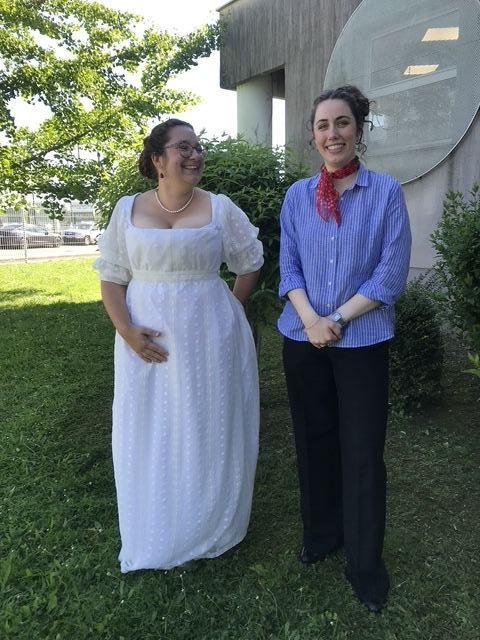

Across three placements in different departments at the Opéra National de Bordeaux, Cathy helped build accessories for the ballet Giselle and learned the day-to-day work of dressing and maintaining costumes through a live season — an early, hands-on introduction to how a major opera house operates behind the curtain.